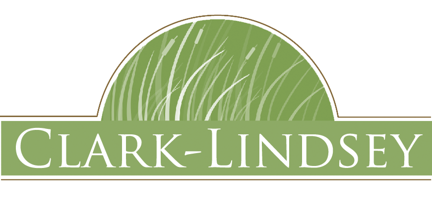
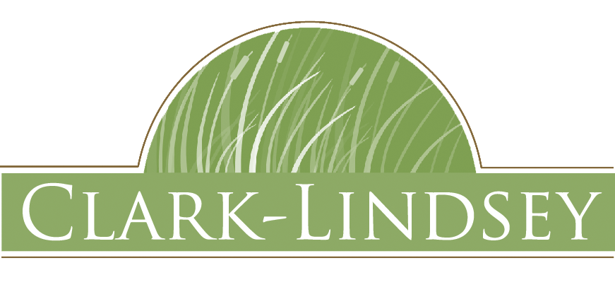

Who can attend?
The event is open to students and the general public of all ages and experience levels. We are aiming for 150 participants!
Human-Centered Design
Quick and Dirty Prototyping
3D CAD Modeling with Autodesk Fusion 360
E-textiles
Laser Cutting
The event is open to students and the general public of all ages and experience levels. We are aiming for 150 participants!
Depending on your skill level, the 28 hour event might result in different outcomes. Beginners can expect to make foam and cardboard mockups. You could also learn 3D CAD and print a basic version of your idea! More experiences teams will probably be able to make something that actually works like a potential product.
Yes! We will try to help form teams or augment existing teams with your talents! We hope to have teams no bigger than 5 people.
We will have basic raw materials like acrylic, wood, and fasteners. Due to safety concerns we will try and avoid metalworking. We will also have a small number of wearable electronics and arduinos for hacking. Tools-wise we be providing sewing machines, soldering irons, 3D printers, laser cutters, and a typical set of hand tools, including drills and saws. The friendly volunteers from Fablab and Makerspace Urbana will be on hand to help!
We are in the process of securing food donations right now for the 3 main meals. We will definitely have snacks provided throughout the duration of the event!
This.... doesn't really answer the question.
Yes! Beginners are encouraged to come! We will be hosting some cool workshops to inspire you and kickstart your maker journey. If you want to learn to use a tool, just ask a volunteer and they can help you out!
 
